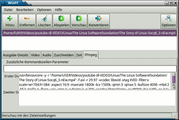

WinFF
Dieser Artikel wurde für die folgenden Ubuntu-Versionen getestet:
Ubuntu 16.04 Xenial Xerus
Ubuntu 14.04 Trusty Tahr
Zum Verständnis dieses Artikels sind folgende Seiten hilfreich:
WinFF  ist eine grafische Oberfläche für das Kommandozeilenprogramm ffmpeg bzw. bei Ubuntu 14.04 für avconv, das es ermöglicht, digitales Video- und Audiomaterial aufzunehmen, zu konvertieren, zu streamen und abzuspielen. Speziell die Konvertierung ist eine der Stärken des Programms.
ist eine grafische Oberfläche für das Kommandozeilenprogramm ffmpeg bzw. bei Ubuntu 14.04 für avconv, das es ermöglicht, digitales Video- und Audiomaterial aufzunehmen, zu konvertieren, zu streamen und abzuspielen. Speziell die Konvertierung ist eine der Stärken des Programms.
Die folgenden Zielformate können - je nach installierten Codecs - verwendet werden: AVI, Blackberry, Bravia, Creative Zen, DV, DVD, Mobile Phones, Nokia, Rockbox, Tuna-Vids, VCD, Websites und WMV. Ein weiterer Pluspunkt ist die Unterstützung von Multithreading für Mehrkern-Prozessoren.
Zu dieser Thematik gibt noch eine Reihe weiterer Programme, die in den Artikel Videodateien umwandeln und Audiodateien umwandeln aufgeführt sind.
Installation¶
WinFF ist in den offiziellen Paketquellen enthalten. Der Paketname zur Installation [1] lautet:
winff (universe)
 mit apturl
mit apturl
Paketliste zum Kopieren:
sudo apt-get install winff
sudo aptitude install winff
Optional kann auch die englische Dokumentation zum Programm installiert werden:
winff-doc (universe)
mit apturl
Paketliste zum Kopieren:
sudo apt-get install winff-doc
sudo aptitude install winff-doc
Anschließend findet sich das Programm bei Ubuntu-Varianten mit einem Anwendungsmenü unter "Multimedia -> WinFF" wieder.
Ab Ubuntu 13.04¶
Ab Ubuntu 13.04 existiert WinFF in zwei Varianten, die jeweils auf die Grafikbibliotheken GTK bzw. Qt zugeschnitten sind. Die Paketnamen lauten winff-gtk2 bzw. winff-qt. Die enthaltenen Funktionen sind identisch.
PPA¶
Falls Probleme auftreten sollten oder man eine eventuell aktuellere Version möchte, gibt es (derzeit allerdings für keine unterstützte Ubuntu-Version! August 2017) ein "Personal Package Archiv" (PPA) [2].
Adresszeile zum Hinzufügen des PPAs:
ppa:paul-climbing/ppa
Hinweis!
Zusätzliche Fremdquellen können das System gefährden.
Ein PPA unterstützt nicht zwangsläufig alle Ubuntu-Versionen. Weitere Informationen sind der  PPA-Beschreibung des Eigentümers/Teams paul-climbing zu entnehmen.
PPA-Beschreibung des Eigentümers/Teams paul-climbing zu entnehmen.
Damit Pakete aus dem PPA genutzt werden können, müssen die Paketquellen neu eingelesen werden.
Bedienung¶
 Die Oberfläche gliedert sich in
Menü:
"Datei" mit der Möglichkeit, Profile zu importieren
"Bearbeiten" für Profile und allgemeine (Pfad)Einstellungen, auch zum Multithreading für Mehrkern-Prozessoren
"Einstellungen" für Details der Programmansicht sowie "Herunterfahren nach Beenden"
"Hilfe" mit Verweis auf Dokumentation sowie Info zur Programmversion
Werkzeugleiste:
"Hinzufügen" einer zu bearbeitenden Datei
"Entfernen" einer eingeladenen Datei (oder Entf )
"Löschen" aller eingeladenen Dateien
"Abspielen" des eingeladenen Originals
"Preview" Konvertieren und Anzeigen des Ergebnisses
"Einstellungen" Ein- oder Ausblenden erweiterter Video- und Audioeinstellungen wie Video-Bitrate, Frame-Rate, Video-Größe, Seitenverhältnis. Hier können auch die im Hintergrund zu verwendenden Kommandozeilenprogramm konfiguriert werden.
Interessant ist die Möglichkeit, mit Konvertierungsprofilen zu arbeiten. Es können eigene Profile definiert und gespeichert werden, oder man nutzt vorinstallierte wie z.B.:
AC3 DVD
Flash Video (full-/widescreen)
PAL DVD fast/fullscreen/widescreen/HQ Full-Widescreen
Profile für eine Vielzahl an Mobiltelephonen
DivX-Profile¶
Mit WinFF lassen sich auch DivX-kompatible Dateien erzeugen – wenn man weiß, wie. Die nötigen Parameter lassen sich bequem als Profil anlegen. Die Kunst besteht nun darin, die richtigen FFMpeg-Optionen zu finden, mit denen eine Datei erzeugt werden kann, die von DivX zertifizierten DVD-Playern abgespielt werden kann. Hier ein Beispielprofil mit Erklärung der einzelnen Parameter:
-f avi -r 25 -vcodec mpeg4 -vtag DX50 -s 720x404 -b:v 2000k -acodec libmp3lame -b:a 128k
-f avi | Gibt das Containerformat der Videodatei an. DivX kennt 2 Formate: AVI und das eigene DIVX Format (FFMpeg unterstützt nur AVI). |
-r 25 | Die Bildfrequenz. In Europa sind 25 Hz üblich |
-vcodec mpeg4 | DivX ist ein MPEG4 Codec |
-vtag DX50 | Die Codec-Kennung DX50 sagt dem Abspiel-Hardware, dass es sich hier um den Codec DivX 5.0 handelt. Andere Kennungen werden von vielen DVD-Playern als unbekannt angesehen. |
-s 720x404 | Die Bildauflösung. Im Profil "Home Theater", welches von allen DivX-zertifizierten Playern unterstützt wird, beträgt die maximale Auflösung 720x576 Bildpunkte bei 25 Hz Bildfrequenz. Die Pixelgröße muss quadratisch sein, d.h. bei einem Seitenverhältnis von 16:9 ergibt sich die vertikale Pixelzahl nach der Formel: horizontale Pixel * 9 / 16. |
-b:v 2000k | Die Videobitrate in kbit/s. 2000 kbps ergibt ein akzeptables Bild in SD-Auflösung. |
-acodec libmp3lame | Der Ton soll als MP3 codiert werden. Dies wird von allen DVD-Playern unterstützt. Evtl. muss noch das Paket libavcodec-extra-5x installiert werden, damit libmp3lame zur Verfügung steht. |
-b:a 128k | Die Audio-Bitrate soll 128kbps betragen. |
Dies sind die Basiseinstellungen, um ein DivX-kompatibles Video zu erhalten. Weitere Optionen sind möglich, um das Bild oder die Dateigröße zu optimieren.
Problembehebung¶
Hinweis:
Für unfreie Formate müssen die entsprechenden Codecs installiert sein, insbesondere das Paket libavcodec-extra-54 (Ubuntu 14.04) bzw. libavcodec-extra-53 (Ubuntu 12.04).
Eventuell kann es vorkommen, dass mittels "Hinzufügen" Dateien nicht richtig geladen werden. Dann könnte helfen, diese mittels "Drag-and-Drop" in das entsprechende Feld zu ziehen.
Falls die "Preview" Funktion nicht funktioniert, kann "Konvertieren" trotzdem klappen.
Probleme beim Konvertieren können dadurch verursacht sein, dass nicht alle erforderlichen Codecs installiert sind. Siehe Zusätzliche Codecs
Eventuell kann es erforderlich sein, in den Voreinstellungen Änderungen vorzunehmen. Diese Presets liegen im Ordner ~/.winff/presets-ubuntu.xml.
Ubuntu 12.04¶
Wer das Programm bereits unter älteren Ubuntu-Versionen genutzt hat und das System auf Ubuntu 12.04 aktualisiert hat, hat anschließend evtl. Probleme mit WinFF. Abhilfe schafft das Löschen der Datei ~/.winff/presets.xml bzw. ~/.winff/presets-ubuntu.xml.
Links¶
WinFF im französischem Ubuntu-Wiki inkl. vieler Profile
Videodateien umwandeln
 Übersichtsseite
Übersichtsseite
- Erstellt mit Inyoka
-
 2004 – 2017 ubuntuusers.de • Einige Rechte vorbehalten
2004 – 2017 ubuntuusers.de • Einige Rechte vorbehalten
Lizenz • Kontakt • Datenschutz • Impressum • Serverstatus -
Serverhousing gespendet von